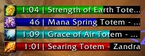

Startup Functions
Adding a Timex Entry
Checking a Timex Entry
Deleting a Timex Entry
Changing an Entry's Duration
Getting a Timex Bar
Formatting a Timex Bar
Starting a Timex Bar
An Example
Checking a Timex Bar
Stopping a Timex Bar
Timex Compatibility
Chat Commands
void Timex:AddStartupFunc(function f,
object a1,
object a2,
object a3, ...
object a20)
VARIABLES_LOADED event. It is similar to the Enable method of Ace addons, and is mostly there for use with non-Ace addons.f - the startup function.a1..a20 - the arguments (optional).Timex:AddStartupFunc(self.AddonFunc, ace.print, ace, "I have entered the game!")void Timex:AddSchedule(object id,
number t,
boolean r,
number c,
function/string f,
object a1,
object a2,
object a3, ...
object a20)
Timex.ARG_ID - the id of this schedule.Timex.ARG_COUNT - the number of times this schedule has run.Timex.ARG_ELAPSED - the elapsed time since this schedule last fired.id - the id, for persistent entries (optional).t - the time delay.r - whether the schedule should be repeated continuously (optional, not to be used with c).c - the number of times the schedule should be repeated before removal (optional).f - the function (pointer) or event (string) to trigger.a1..a20 - the arguments (optional).Timex:AddSchedule("MyAddOn", 5, nil, nil, ace.print, ace, "Hello World!")Timex:AddSchedule("MyAddOn", 2, TRUE, nil, ace.print, ace, "Yadda!")Timex:AddSchedule("MyAddOn", 2, nil, 5, ace.print, ace, "Blah.")Timex:AddSchedule(timexBar, 0.1, nil, time*10, timexHandler, self, timexBar, Timex.ARG_ELAPSED)Timex:AddSchedule("MyAddOn", 2, TRUE, nil, "MY_TIMEX_UPDATE", "% has seen %s counts", Timex.ARG_COUNT)
function AddOnName:Enable()
self:RegisterEvent("MY_TIMEX_UPDATE")
end
function AddOnName:MY_TIMEX_UPDATE(msg, c)
-- c is the current count.
ace:print(format(msg, c)
if c == 2 then
ace:print("Second.")
elseif c == 1 then
ace:print("First.")
end
endboolean/number Timex:ScheduleCheck(object id,
boolean r)
id - the id of the entry.r - whether to return the time elapsed. (optional).r is FALSE or nil, TRUE if the entry exists, nil otherwise. If r is not
FALSE or nil, the time elapsed on the entry, nil otherwise.local a = Timex:ScheduleCheck("MyAddOn")
if a then
ace:print("Exists.")
endlocal a = Timex:ScheduleCheck("MyAddOn", TRUE)
if a then
ace:print(a)
endvoid Timex:DeleteSchedule(object id)
id - the id of the entry.Timex:DeleteSchedule("MyAddOn")This method is used to change a timer's duration while it is running. For example, it can be used to change the 'tick rate' of a repeating timer.
void Timex:ChangeDuration(object id number t)
id - the id of the entry.t - the new duration of the entry.Timex:DeleteSchedule("MyAddOn", 15)This module of timex exists for providing timer bars to both players for their macros and to developers for AddOns that need to display a timer. The bar has two text elements, these are timer and text. The colour of the bar and text are both configurable along with the size and shape of the bar. Further, there's a button to the left of the bar which can display a spell/item texture for easy viewing of whatever's ticking down. Note that the interface for TimexBar has changed in R23.
Here's a visual example of a standard Timex Bar, as shown by the AceTimer AddOn:

These bars are currently at their default length and size. Once a bar has finished ticking down, it can fire off a function, so if you want to rearrange your GUI based on when bars show and hide, you can now do so. For example, you could create a bunch of bars which anchor off of each other to the right and when one disappears, the next bar over crops left to take its space.
These bars are currently at their default length and size. Once a bar has finished ticking down, it can fire off a function, so if you want to rearrange your GUI based on when bars show and hide, you can now do so. For example, you could create a bunch of bars which anchor off of each other to the right and when one disappears, the next bar over crops left to take its space.
The interface for creating and starting a bar has changed somewhat from pre-R23 versions of Timex. Essentially, you get Timex to assign a bar from its free pool to your id, then you format the bar and start it. Note that a bar is only truly reserved (ie removed from the free pool) once it has started. A bar returns to the free pool when it finishes running, or if it is stopped.
void TimexBar:Get(object id)
id - the id of the bar.string TimexBar:GetName(object id)
nil if no TimexBar is assigned to the id.id - the id of the bar.id, or nil.There are a number of formatting methods to change the appearance of a Timex bar...generally these are similar to the formatting options available on the standard UI Frame elements. All are optional (ie you don't have to set any of them if you don't wish to).
void TimexBar:SetColor(object id
number red,
number green,
number blue,
number alpha)
id - the id of the bar.red - red channel.green - green channel.blue - blue channel.alpha - alpha channel (optional).void TimexBar:SetTextColor(object id
number red,
number green,
number blue,
number alpha)
id - the id of the bar.red - red channel.green - green channel.blue - blue channel.alpha - alpha channel (optional).void TimexBar:SetPoint(object id
string point,
string relativeFrame,
string relativePoint,
number xOffset,
number xOffset)
id - the id of the bar.point - the anchor point of the bar.relativeFrame - the anchor frame (that the bar's position will be relative to).relativePoint - the anchor point of the anchor frame.xOffset - X offset.yOffset - Y offset.void TimexBar:SetScale(object id
number scale)
id - the id of the bar.scale - the scale of the bar.void TimexBar:SetWidth(object id
number width)
id - the id of the bar.width - the width of the bar.void TimexBar:SetHeight(object id
number height)
id - the id of the bar.height - the height of the bar.void TimexBar:SetTimeWidth(object id
number timeWidth)
id - the id of the bar.timeWidth - the width of the timer.void TimexBar:SetText(object id
string text)
id - the id of the bar.text - the text of the bar.void TimexBar:SetTexture(object id
string texture)
id - the id of the bar.texture - path to the texture to display with the bar.void TimexBar:SetFunction(object id,
function f,
object a1,
object a2,
object a3, ...
object a20)
TimexBar:Stop method.Timex.ARG_ID - the id of this TimexBar.Timex.ARG_ELAPSED - the elapsed time since this TimexBar was last updated.Timex.ARG_REMAINING - the time remaining on this TimexBar.id - the id of the bar.f - the function to be run.a1..a20 - the arguments (optional).void TimexBar:SetUpdateFunction(object id,
function f,
object a1,
object a2,
object a3, ...
object a20)
id - the id of the bar.f - the function to be run.a1..a20 - the arguments (optional).After assigning and formatting your bar, it is time to start it. This removes the bar from the free pool and displays it to the user. It will start running immediately.
void TimexBar:Start(object id,
number time,
number res)
res parameter to 1.id - the id of the bar.time - The duration of the bar.res - The resolution of the bar display in seconds (optional, default 0.1).
The following code shows how to format and start a TimexBar.
local toggle;
local function toggleAppearance(id, remaining)
if toggle then
TimexBar:SetText(id, "My Bar #2 - " .. remaining);
TimexBar:SetColor(id, 1.0, 1.0, 1.0);
TimexBar:SetTextColor(id, 0, 0, 0);
else
TimexBar:SetText("MyBar", "My Bar #1 - " .. remaining)
TimexBar:SetColor("MyBar", 1.0, 0.2, 0.2)
TimexBar:SetTextColor("MyBar", 1.0, 1.0, 0.2)
end
toggle = not toggle;
end
TimexBar:Get("MyBar")
TimexBar:SetText("MyBar", "My Bar #1")
TimexBar:SetTexture("MyBar", "Interface\\Icons\\Spell_Nature_ResistNature")
TimexBar:SetColor("MyBar", 1.0, 0.2, 0.2)
TimexBar:SetTextColor("MyBar", 1.0, 1.0, 0.2)
TimexBar:SetPoint("MyBar", "BOTTOMLEFT", "UIParent", "CENTER", 40, 40)
TimexBar:SetWidth("MyBar", "200")
TimexBar:SetHeight("MyBar", "20")
TimexBar:SetTimeWidth("MyBar", "50")
TimexBar:SetScale("MyBar", "1.6")
TimexBar:SetFunction("MyBar", ace.cmd.msg, ace.cmd, "'%s' bar hidden.", TimexBar.ARG_ID)
toggle = true;
TimexBar:SetUpdateFunction("MyBar", toggleAppearance, TimexBar.ARG_ID, TimexBar.ARG_REMAINING);
local name = TimexBar:Start("MyBar", 10, 0.5)
ace:print(name.." is active.")
First we assign a bar to the id "MyBar" using Timex:Get. The next two lines set the text and icon of the bar. After this, we set the color
of the bar, and the color of the text displayed.
Next we set the bar so that it's bottom-left corner is 40 pixels to the left and 40 pixels above the center of the screen. We set the width and height of the bar, and set the time display so that it takes up a quarter of the bar's width. Then we set the scale to 1.6 - the default scale is 0.8, so this bar will appear twice the size as the default.
We then set a function so that the bar will print, "'MyBar' bar hidden." to the chat log when it completes. We also set a function to toggle the appearance of the bar every time it is updated.
Lastly, we start the bar so that it updates every half second for 10 seconds, and print the name of the bar to the chat log with a message saying that it has started
boolean/number TimexBar:Check(object id,
boolean r)
id - the id of the bar.r - whether to return the name of the bar (optional).r is FALSE or nil, TRUE if the bar exists, nil otherwise. If r is not
FALSE or nil, the name of the bar, nil otherwise.local a = TimexBar:Bar("MyBar")
if a then
ace:print("Exists.")
end
This example will print, "Exists." to the chat log if a TimexBar exists for the id "MyBar".
boolean/number TimexBar:Stop(object id)
id - the id of the bar.local a = TimexBar:Bar("MyBar")
This example will stop TimexBar for the id "MyBar".
So you now know the ins and outs of developing using Timex and its Bars module, is there anything to add? Not really, though I would like to explain a few things about syntax first and how syntax differs through code formats.
Throughout your days coding for the World of Warcraft community you're going to see many kinds of coding styles, this is going to change how you use Timex as far as the syntax of calling functions is concerned. To avoid confusion later I've decided that it would be best to explain the differences between these and the best way to handle them. Note: I'll be using AddSchedule to demonstrate how these work but these examples will work for any part of Timex that accepts functions.
This is a basic function format that's most frequently used.
function AddOn_Function_Blah(arg1, arg2)
Timex:AddSchedule(..., AddOn_Function_Blah, arg1, arg2)
This is a slightly more advanced format used infrequently.
function Table.Function_Name(arg1, arg2)
Timex:AddSchedule(..., Table.Function_Name, arg1, arg2)
This is the most advanced form Lua has to offer, all the cool kids are using it. It has a few variations on the basic form.
function AddonName:DoSomething(arg1, arg2)
function AddonName.DoSomething(self, arg1, arg2)
AddOnName {
DoSomething = function(self, arg1, arg2),
}Timex:AddSchedule(..., self.DoSomething, self, arg1, arg2)
Note: You only need to pass self if the function you're passing too actually references self. Lua uses pseudo-OO so it's up to you, you can mix and match function types.
The Chronos placeholder addon is provided in case people wish to use Timex in place of Chronos - the aim is to be fully compatible with Chronos where possible. Drop us a line if you find that in practice Timex is not working properly with Chronos-based addons.
Timex has a chat-command system for options, it uses a one-line system for ease of typing and to allow for bigger macros (so you don't have to retype our chat-operator on every line). Further, the chat-command system isn't watered down in any way and provides as much of the power of Timex as we were able to cram in, so it is slightly complex but I shall endeavour to explain how each of the commands works.
Here's the basic layout of the system:
/tmx do n="[timer name]" t=[time] r=[repeat] c=[count] f=[function] a=[args]
The first thing to cover is: what's up with those quotation marks? The chat-command system separates by spaces, so if something you want to use (such as the name or an arg) has a space in it, you'll have to wrap it in quotation marks to ensure that the space inside isn't considered as a separator. Basically, if you're not actively typing spaces between the commands and you have a space that's not command related, wrap quotation marks around the entire thing, as shown by 'timer name'.
Parameters:timer name - this is the name of your timer, you don't have to supply this at all but if you want to be able to stop your timer at
any point, it's a good idea. The format of name is either n=mytimer or n="my timer".time - this is the amount of time that will pass before the Timex does its stuff. If you set this to eight seconds
then Timex will delay for 8 seconds before using the function that you gave it. The format of time is t=8.repeat - repeat will make your timer continuous, so it'll cycle on a basis of the time you gave it. If you provide
it with 8 seconds then every 8 seconds it will fire the function you gave it until it's stopped. To make repeat happen, supply r=TRUE as a command.count - similar to repeat, however it will only cycle for the amount of times that you specify. If that's three cycles,
it will fire your function three times (waiting for the delay first of cocurse), then automatically stop. The format of count is c=8.function - this is the function you wish to call. It is supplied as a pointer, so if your function is DoThis(a, b),
you'll have to supply DoThis here. The format of function is f=DoThis.args - these are the arguments you wish to supply along with your function, so if your function is DoThis(a, b),
you'll have to supply 'a, b' here. The format of args is either a=arg if it's one arg or a="arg1, arg2, arg3 ... etcetera"
if it's more.Here's an example of the above in action:
/tmx do n="my print" t=5 f=SendChatMessage a="'Hello World!', SAY"
This would make you say 'Hello World!' after five seconds have passed.
Now that adding timers is out of the way, how would you go about stopping them? That's easy too. There's a stop command that you can supply a timer name too, it will look for that timer name and stop it. So if you've decided you don't want a timer to run or you have something on a repeat or a count and you wish to stop it then you can easily do so with a quickly accessible chat-command.
/tmx stop my print
This would search for the 'my print' timer and stop it. Use both of these commands to your advantage in macros and really take command of your playing style.